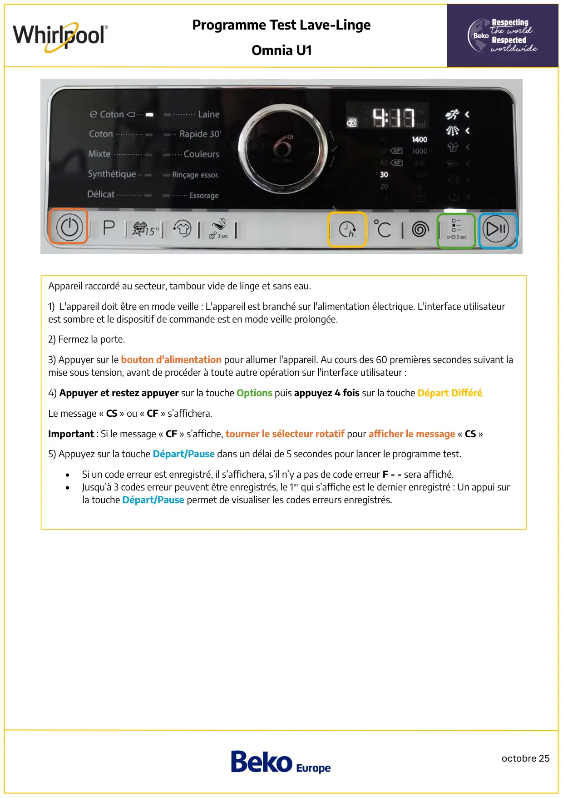
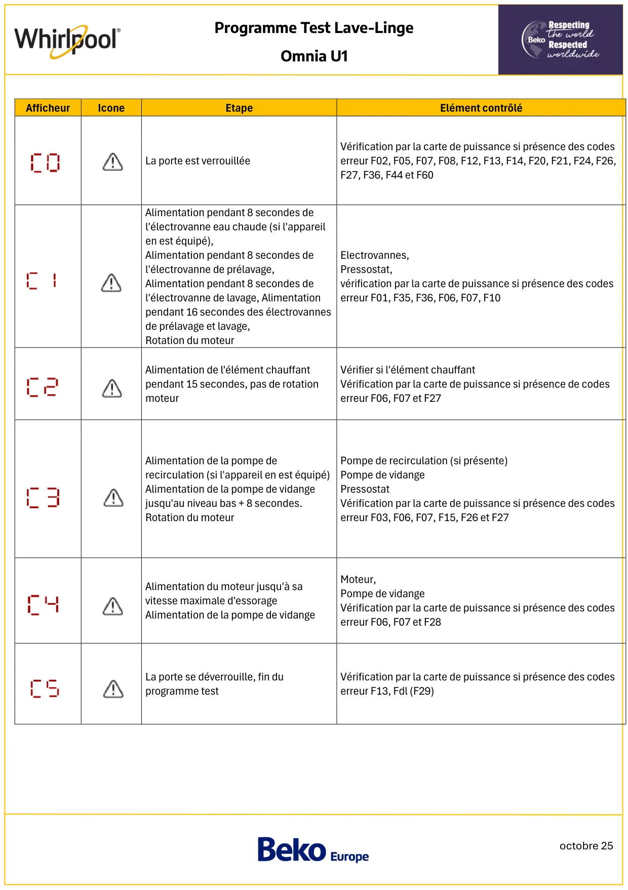
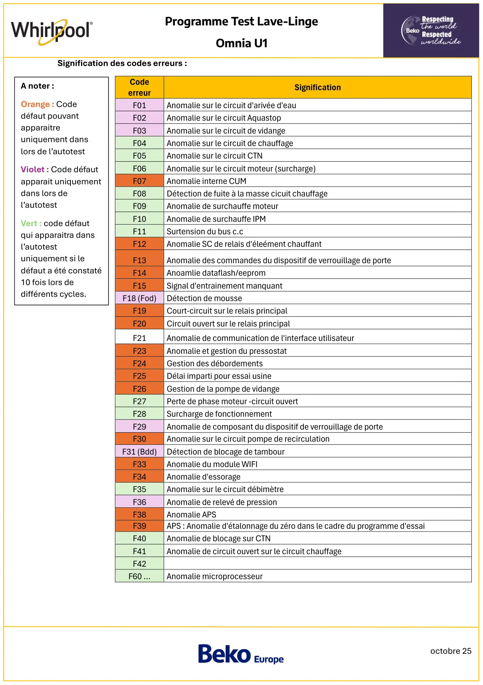

Prog Test lave linge Whirlpool Omnia U1

octobre 25Programme Test Lave-LingeOmnia U1Appareil raccordé au secteur, tambour vide de linge et sans eau.1) L'appareil doit être en mode veille : L'appareil est branché sur l'alimentation électrique. L'interface utilisateurest sombre et le dispositif de commande est en mode veille prolongée.2) Fermez la porte.3) Appuyer sur le bouton d'alimentation pour allumer l'appareil. Au cours des 60 premières secondes suivant lamise sous tension, avant de procéder à toute autre opération sur l'interface utilisateur :4) Appuyer et restez appuyer sur la touche Options puis appuyez 4 fois sur la touche Départ Différé.Le message « CS » ou « CF » s’affichera.Important : Si le message « CF » s’affiche, tourner le sélecteur rotatif pour afficher le message « CS »5) Appuyez sur la touche Départ/Pause dans un délai de 5 secondes pour lancer le programme test.•Si un code erreur est enregistré, il s’affichera, s’il n’y a pas de code erreur F - - sera affiché.•Jusqu’à 3 codes erreur peuvent être enregistrés, le 1er qui s’affiche est le dernier enregistré : Un appui surla touche Départ/Pause permet de visualiser les codes erreurs enregistrés.
1 / 3
octobre 25Programme Test Lave-LingeOmnia U1AfficheurIconeEtapeElément contrôléLa porte est verrouilléeVérification par la carte de puissance si présence des codeserreur F02, F05, F07, F08, F12, F13, F14, F20, F21, F24, F26,F27, F36, F44 et F60Alimentation pendant 8 secondes del'électrovanne eau chaude (si l'appareilen est équipé),Alimentation pendant 8 secondes del'électrovanne de prélavage,Alimentation pendant 8 secondes del'électrovanne de lavage, Alimentationpendant 16 secondes des électrovannesde prélavage et lavage,Rotation du moteurElectrovannes,Pressostat,vérification par la carte de puissance si présence des codeserreur F01, F35, F36, F06, F07, F10Alimentation de l'élément chauffantpendant 15 secondes, pas de rotationmoteurVérifier si l'élément chauffantVérification par la carte de puissance si présence de codeserreur F06, F07 et F27Alimentation de la pompe derecirculation (si l'appareil en est équipé)Alimentation de la pompe de vidangejusqu'au niveau bas + 8 secondes.Rotation du moteurPompe de recirculation (si présente)Pompe de vidangePressostatVérification par la carte de puissance si présence des codeserreur F03, F06, F07, F15, F26 et F27Alimentation du moteur jusqu'à savitesse maximale d'essorageAlimentation de la pompe de vidangeMoteur,Pompe de vidangeVérification par la carte de puissance si présence des codeserreur F06, F07 et F28La porte se déverrouille, fin duprogramme testVérification par la carte de puissance si présence des codeserreur F13, Fdl (F29)
2 / 3
octobre 25Programme Test Lave-LingeOmnia U1Signification des codes erreurs :CodeerreurSignificationF01Anomalie sur le circuit d'arivée d'eauF02Anomalie sur le circuit AquastopF03Anomalie sur le circuit de vidangeF04Anomalie sur le circuit de chauffageF05Anomalie sur le circuit CTNF06Anomalie sur le circuit moteur (surcharge)F07Anomalie interne CUMF08Détection de fuite à la masse cicuit chauffageF09Anomalie de surchauffe moteurF10Anomalie de surchauffe IPMF11Surtension du bus c.cF12Anomalie SC de relais d'éleément chauffantF13Anomalie des commandes du dispositif de verrouillage de porteF14Anoamlie dataflash/eepromF15Signal d'entrainement manquantF18 (Fod)Détection de mousseF19Court-circuit sur le relais principalF20Circuit ouvert sur le relais principalF21Anomalie de communication de l'interface utilisateurF23Anomalie et gestion du pressostatF24Gestion des débordementsF25Délai imparti pour essai usineF26Gestion de la pompe de vidangeF27Perte de phase moteur -circuit ouvertF28Surcharge de fonctionnementF29Anomalie de composant du dispositif de verrouillage de porteF30Anomalie sur le circuit pompe de recirculationF31 (Bdd)Détection de blocage de tambourF33Anomalie du module WIFIF34Anomalie d'essorageF35Anomalie sur le circuit débimètreF36Anomalie de relevé de pressionF38Anomalie APSF39APS : Anomalie d'étalonnage du zéro dans le cadre du programme d'essaiF40Anomalie de blocage sur CTNF41Anomalie de circuit ouvert sur le circuit chauffageF42F60 …Anomalie microprocesseurA noter :Orange : Codedéfaut pouvantapparaitreuniquement danslors de l’autotestViolet : Code défautapparait uniquementdans lors del’autotestVert : code défautqui apparaitra dansl’autotestuniquement si ledéfaut a été constaté10 fois lors dedifférents cycles.
3 / 3